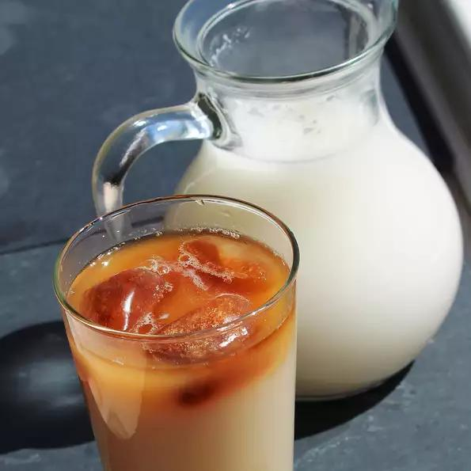

Horcahta

A refreshing beverage to cool off in the summertime!
Horchata is a refreshing summer drink. I learned this recipe a couple years ago from a Mexican coworker, and I was immediately addicted!
Ingredients
- 2 quarts hot water
- ½ cup white sugar
- 1½ teaspoons ground cinnamon
- 1 cup long grain rice
- 1 cup milk
- ice cubes, for serving
Direction
- Pour sugar, cinnamon, and rice into hot water; stir until sugar dissolves. Cover, and let stand at room temperature for at least 3 hours, but preferably overnight.
- Stir in milk, then puree with a hand blender, or in batches in a standing blender until the rice resembles fine sand. Strain through several layers of cheesecloth, or through a very fine strainer. Serve over ice.